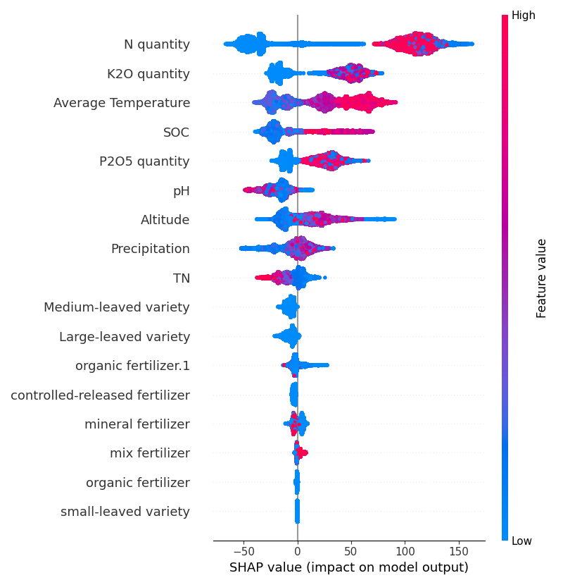

SHAP分析
×

训练集SHAP图
测试集SHAP图
从上图可以看出，两张SHAP图的最重要特征均为N qunantity施氮量，且呈正相关关系。而在测试集上，而对于更高SHAP值的点，呈现负相关，这也和实际农业生产相符：施用化肥量对于产量的提升不是越多越好的。
偏依赖分析
无机/有机肥与N quantity的偏依赖分析
无机/有机肥与单位产量N2O排放的偏依赖分析
从左上图可以看出，无论是无机/有机肥，与Yield都是呈正相关关系的，这与SHAP图的结论一致
从右上图可以看出，对于无机肥而言，单位产量N2O排放刚开始呈现下降趋势，说明对于同样施氮量，N2O排放的提升量小于Yield的提升量。而在一定程度后，曲线呈上升趋势，说明N2O排放的提升量大于Yield的提升量，这也与shap图的分析一致； 而对于有机肥而言，施用量整体均呈下降趋势，说明有机肥相较于普通的，是更优质的一种肥料。